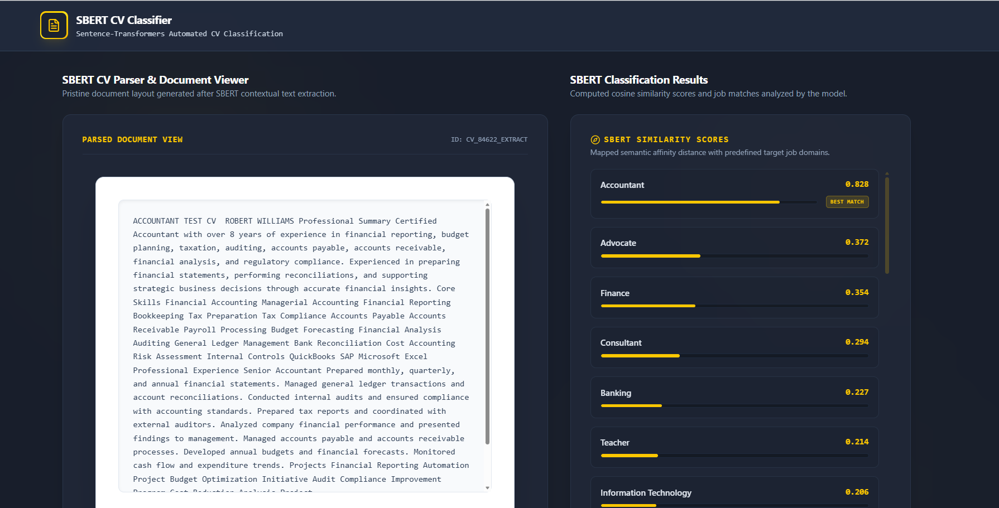

Group project · Natural Language Processing
Resume Detector
An NLP-based system for matching resumes with suitable job categories through semantic text embeddings and similarity ranking.

My Role & Contributions
I focused on model research and evaluation, followed by testing and validation after the team completed development.
- Model research
- Investigated candidate NLP models and considered their suitability for the resume data and the project's matching task.
- Evaluation
- Evaluated model suitability and reviewed matching outputs to assess whether the results aligned with the expected job categories.
- Testing & validation
- Tested the completed system and checked its resume-to-category matches to identify unexpected results.
Model & Technologies
NLP pipeline documented in the team's final report.
- Language
- Python
- Embeddings
- Sentence-BERT / Sentence-Transformers, using all-MiniLM-L6-v2 to produce 384-dimensional text embeddings.
- Text processing
- PyMuPDF for PDF text extraction and regular expressions for text cleaning.
- Matching
- Cosine similarity between resume and job-category embeddings.
- Evaluation tools
- scikit-learn; precision, recall, F1-score, and ranking evaluation.
Problem & Approach
Resumes describe similar skills in different ways, making exact keyword matching restrictive. The team's system extracts and cleans resume text, creates semantic embeddings, and ranks job categories by cosine similarity.
The report describes evaluation using a public resume dataset covering 24 job categories. Performance varied across categories, with class imbalance and broad labels identified as important limitations.
What I Learned
Selecting a model requires understanding both the task and the data. Working with varied resumes helped me appreciate the challenges of generalization, including overfitting and underfitting, and why matching outputs need careful testing rather than relying on a single score.
Academic classification prototype; category matches do not establish an applicant's suitability for hiring.